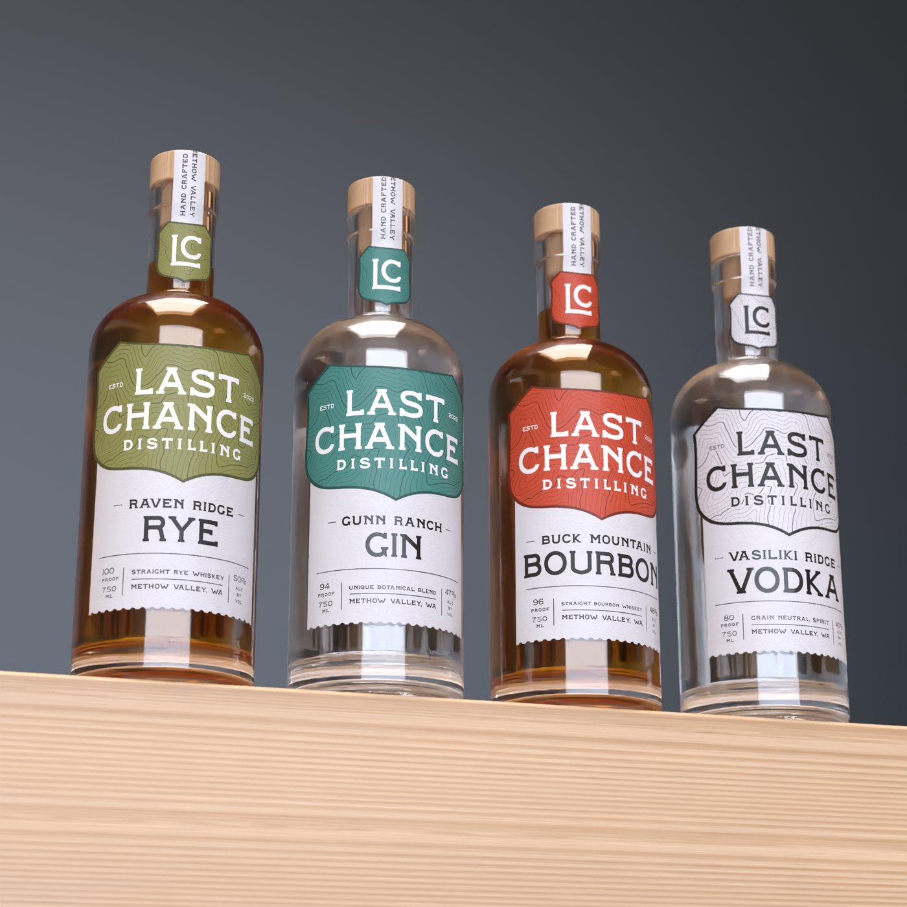
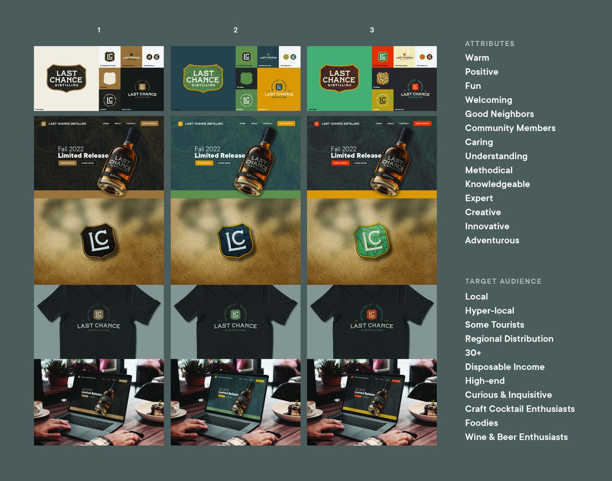
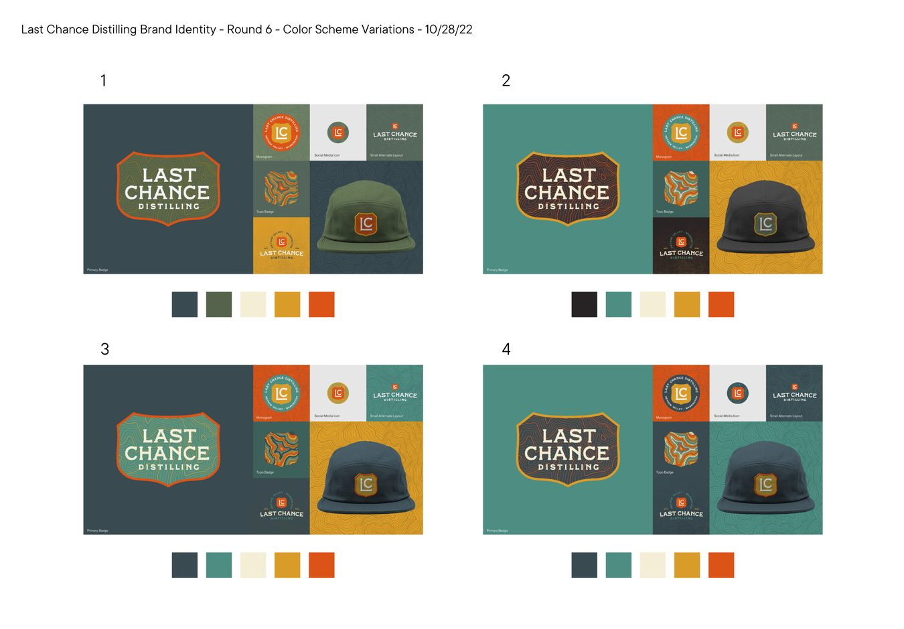
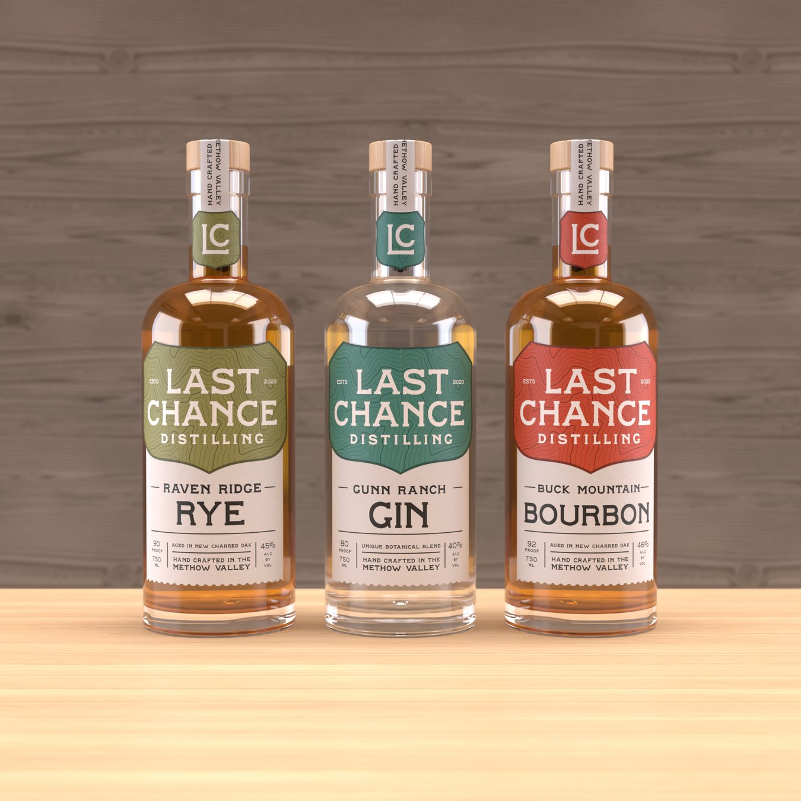
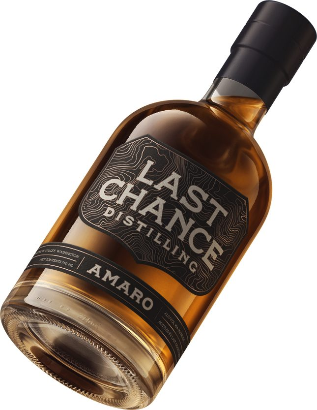
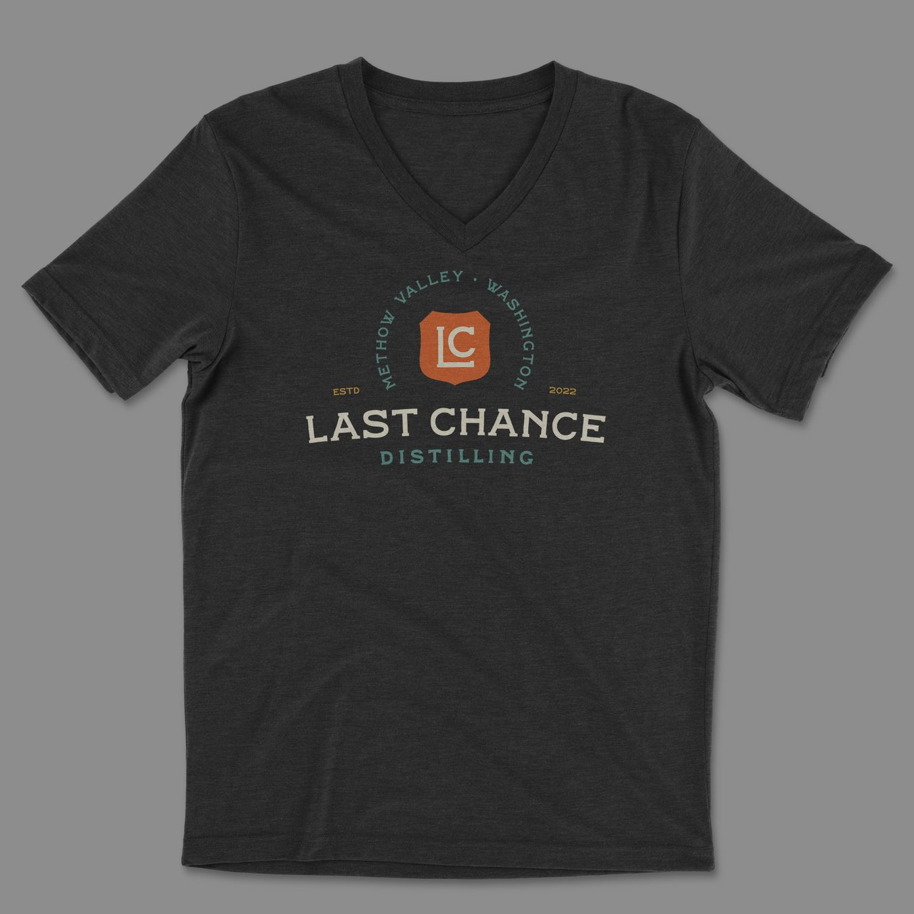

Last Chance Distilling
A full brand identity for a craft distillery in Washington's Methow Valley: from the mark and color system to packaging, the product line, and merch.

Overview
Last Chance Distilling is a small-batch distillery in the Methow Valley, in Washington's North Cascades. The project was a ground-up brand identity (a logo and badge system, a color language, packaging for the full product line, and applications from merch to a website concept) developed across several rounds with the distillery.
Starting with the brand, not the logo
Before drawing anything, we set the brand's foundation. Last Chance is warm, welcoming, and a little adventurous: a good neighbor with real expertise. Its purpose is about bringing people together and celebrating the Methow Valley itself, aimed at a local and regional audience of craft-cocktail drinkers, foodies, and people who care where their spirits come from. Those attributes guided every visual decision that followed.

The mark, and finding the color
The core mark is an LC monogram set in a shield (a nod to the region's road signs and ranch brands) wrapped in a topographic contour pattern pulled from the valley's terrain. That topo motif became the brand's connective tissue: it sits behind badges, on labels, on patches, and across packaging, tying the system together and rooting it in place.
Color took several rounds. We explored greens, teals, and warmer earth tones across badges, hats, and layouts before landing on a palette that feels outdoorsy and warm without being rustic-cliché: deep spruce and teal, warm cream, gold, and a burnt-orange accent.

A product line that reads as a family
The spirits share one label architecture: the same shield, topo texture, and layout, with the badge color shifting per expression. Product names sit in the lower panel, each with its own place name (Raven Ridge Rye, Gunn Ranch Gin, Buck Mountain Bourbon, Vasiliki Ridge Vodka) inside an unmistakably shared frame, so the line holds together on a shelf and has room to grow.

Beyond the bottle
The same system extends past packaging: a limited-release Amaro, embroidered patches and caps, tees, social icons, and a website concept for online sales. The badge and topo pattern carry the brand across every surface, from a bottle on a back-bar to a hat on a trailhead.


Outcome
Last Chance came away with a complete, flexible identity: a badge and color system the distillery can carry across product, packaging, retail, and web, with room to add new expressions without starting over. The topo motif and place-name naming keep every piece tied to the valley the spirits come from.